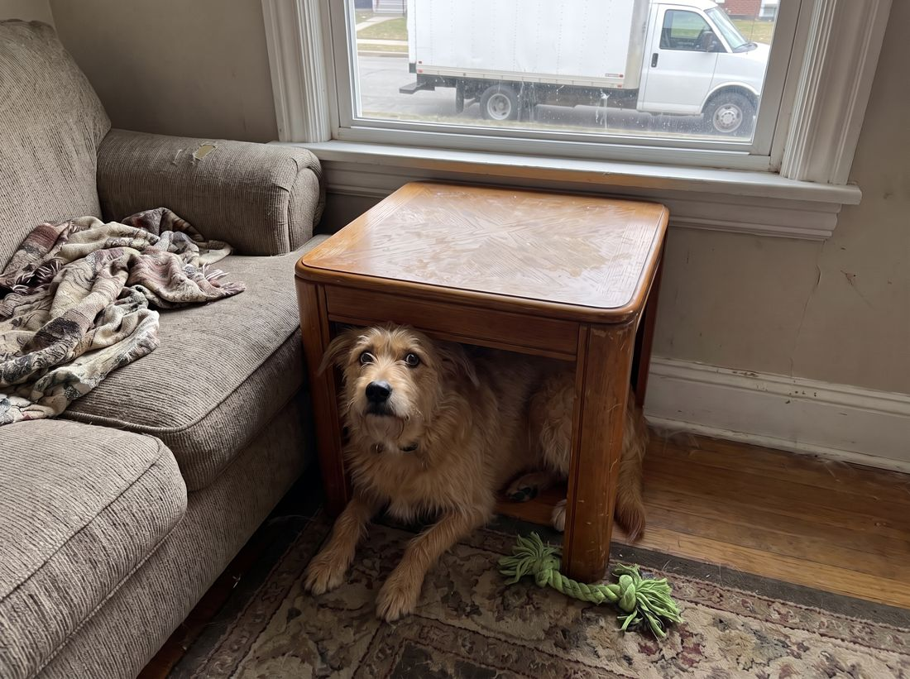
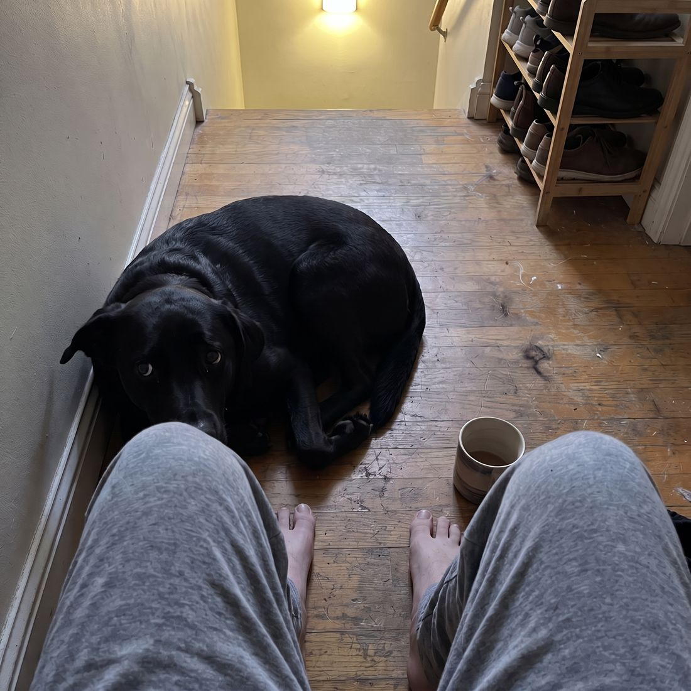
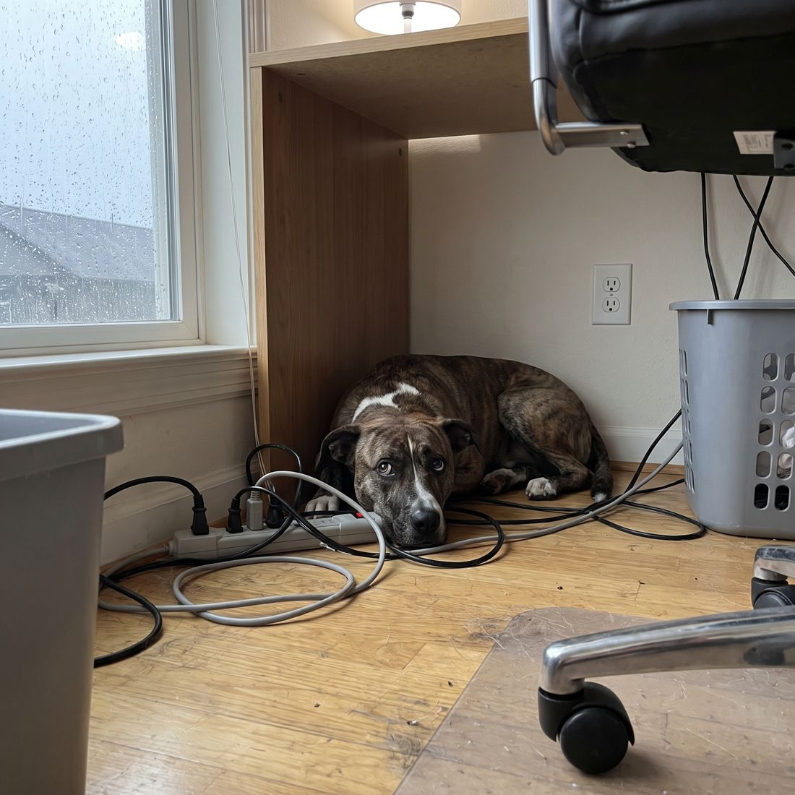
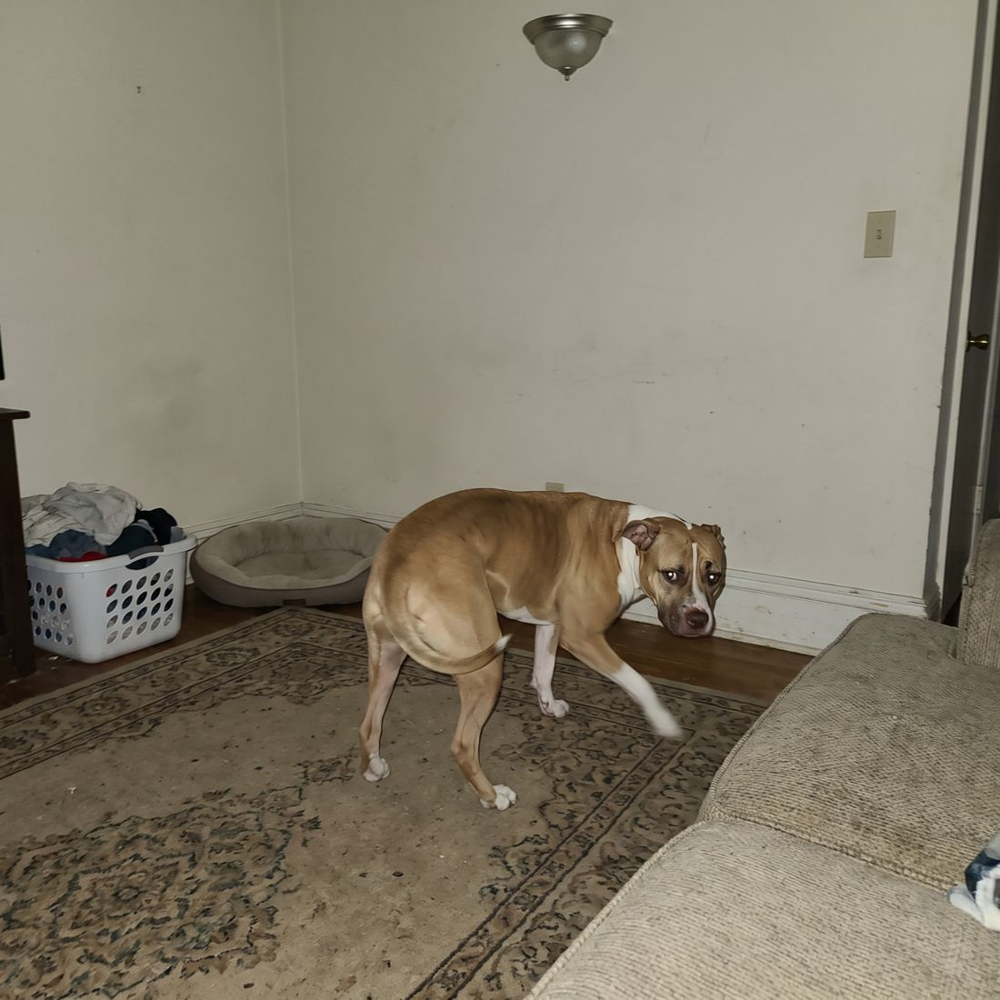
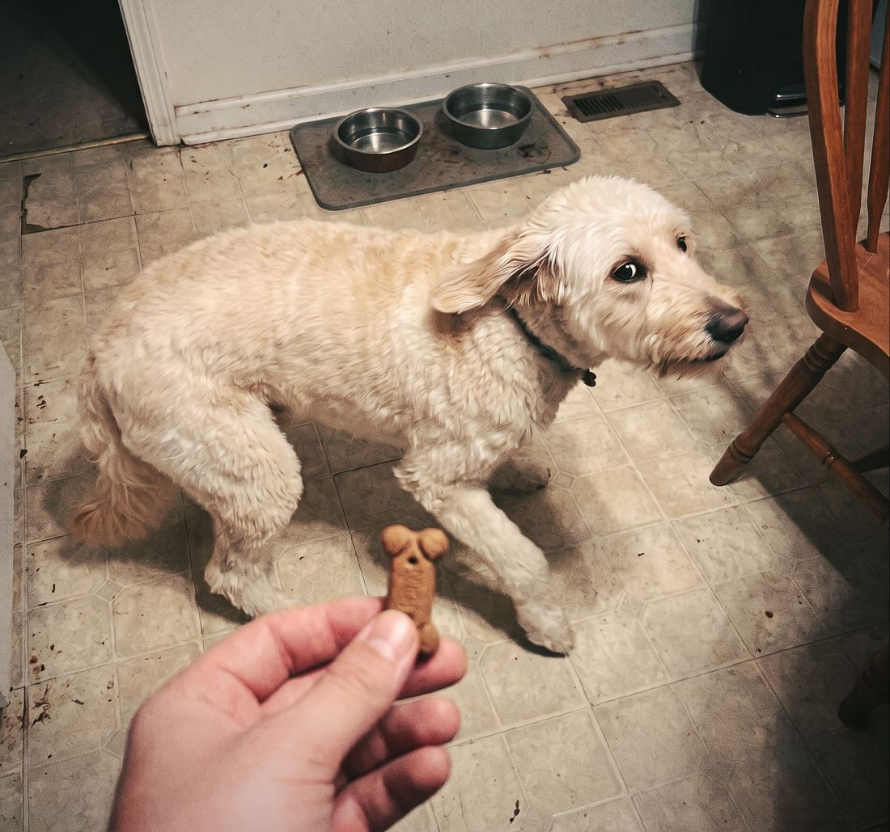
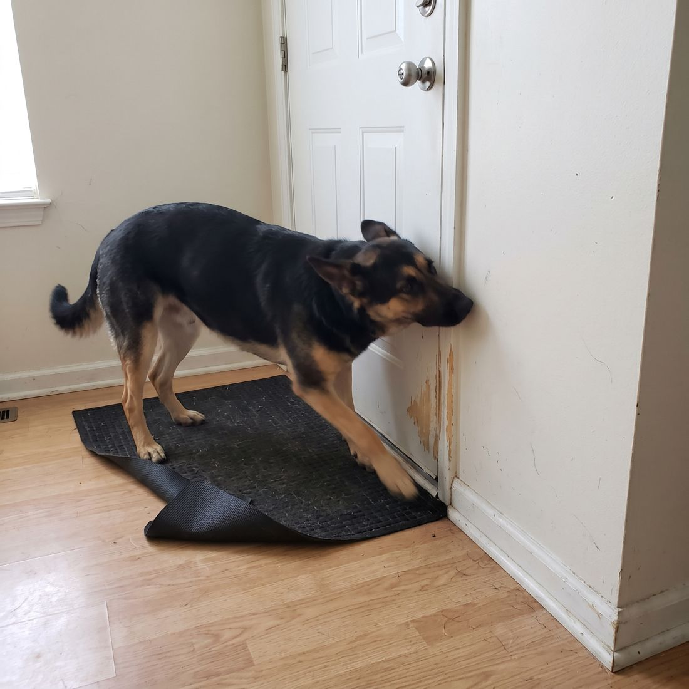
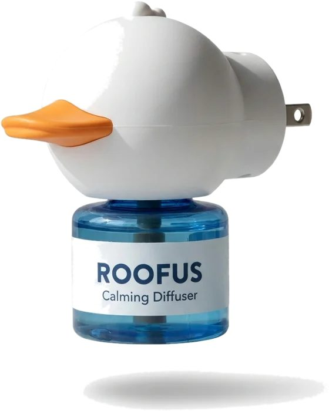
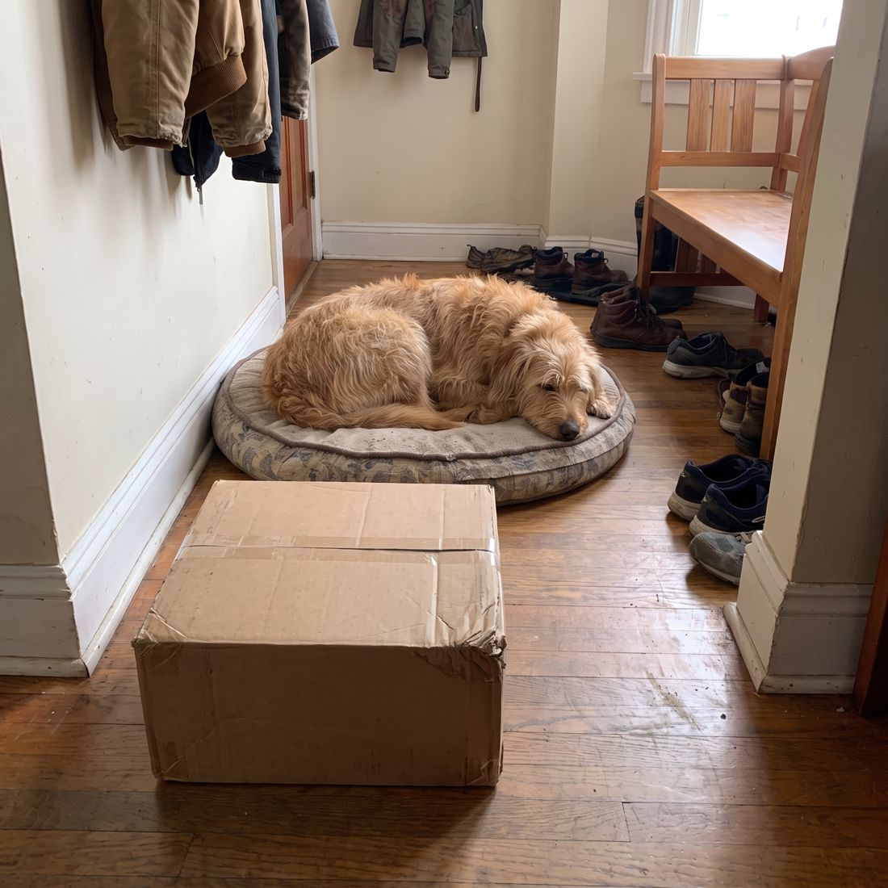
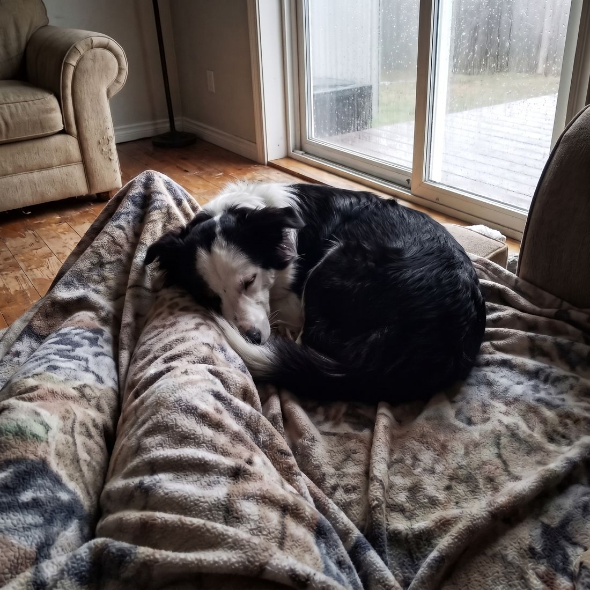

Most Owners Think Their Dog Is "Just Jumpy." Here's Why He Startles at Every Sound, and Why It Gets Worse With Age.

It's 3:40 on a Tuesday. A truck pulls up outside and the brakes hiss. You barely notice. He does.
His ears go flat. He's off the couch before the door slams, and wedged under the side table by the time the doorbell rings. You put down what you were doing and get on the floor, one hand out, waiting for the shaking to stop. Again. It's the third time today.

Because it's never just one sound. It's the trash truck at 6am. The neighbor's car door. The garage door, the leaf blower, the pan you dropped in the kitchen, the storm that rolls in at four. The big nights everyone talks about are only the loudest version of something he lives with every single day.
Plenty of owners with two dogs see the same strange thing. Same house, same walks, same food. One sleeps straight through the storm. The other is wedged behind the toilet, panting. Researchers find big differences between breeds, which points to the dog, not to how you raised him.[1]
It isn't that you spoiled him. It isn't that he's being dramatic. And it is very unlikely to be something he grows out of.
In a separate UK survey, nearly half of owners said their dog showed at least one sign of fear at loud noises like fireworks, thunder or gunshots.[2] You are not the only one getting down on the floor three times a day. You're one of millions.

7 Signs Your Dog's Noise Fear Is Bigger Than "A Little Jumpy"
- He hears it before you do. His ears go back at a car door you barely noticed.
- He hides in the same spot every time: under the table, behind the couch, the bathtub, the back of the closet.
- He pants and paces when the room isn't warm, walking loops and ignoring his own bed.

- He won't take the treat he'd normally do anything for. A dog too scared to eat is telling you a lot.

- He follows you from room to room and won't lie down, even when the house is quiet.
- He scratches at doors or tries to bolt the second one opens.

- It's worse than it was a year ago. Sounds he used to ignore now send him running.
If even two or three of those sound like your dog, this is not a quirk. And here's the pattern most owners miss: by the time the bang happens, it's already too late to calm him down.
Why Comforting Him After the Bang Rarely Seems to Help
Every dog has a starting level of tension in the room. Each bang lands on top of it.
A dog who's settled in the room has headroom. He startles, looks at you, and comes back down. A dog who's already on edge has none. The same noise pushes him straight over the line into panic, and once he's there, no amount of petting, treats or soothing voices brings him back quickly.
It also explains why it gets worse over time. Every time he tips into panic, he learns to brace for the next sound, so the fear kicks in sooner and at quieter noises. Behavior researchers call this sensitization, and it fits with the finding that noise fear grows more common with age.[1][2]
And before anyone says it: yes, some dogs need more than a home routine. If your dog hurts himself, breaks through doors or windows, or panics for hours, please talk to your vet. There are prescription options that help, and nothing here replaces them.
But for most noise-shy dogs, what's missing isn't a better fix after the bang. It's calm that's already in the room before the noise starts.
Why Holding Him, Turning Up the TV and the Last-Minute Fixes Keep Falling Short
Every owner of a noise-scared dog has a routine. You sit with him. You turn the TV up. You try the snug wrap, and the calming chew when you see the storm coming.
Some of those can take the edge off, and if they help your dog, keep them. But look at when every one of them starts: when the noise starts. They are all "during." Nothing in that routine is working on "before," which is the part that decides how hard he falls.
And the stakes are higher than a bad afternoon. A dog who panics at a sound doesn't always hide. Sometimes he runs, and a dog who startles at the front door is a dog who can bolt straight through it. All it takes is a delivery and a door held open for ten seconds.
Why the Calm Has to Start Before the Noise
Dogs talk to each other with scent long before they bark. Pheromones are the signals they use to say things like "you're safe here," and appeasing pheromones are one of the few calming approaches designed to work quietly in the background, day and night, without asking your dog to swallow anything.
That's the idea behind the Roofus Calming Diffuser Kit. You screw a refill into the diffuser, plug it into the wall in the room where your dog spends his time, and it releases CalmSignal™, a pheromone analogue, around the clock. There's nothing to set, nothing to give at the right minute, and no smell you'll notice.

Appeasing pheromones have been studied for exactly this. In a placebo-controlled study, dogs wearing a dog-appeasing pheromone collar were rated significantly less fearful during recorded thunder than dogs on a placebo.[3] In an earlier trial of dogs afraid of fireworks, owners reported improvement in most of the fear signs they tracked after a few weeks of continuous use.[4]
To be clear: those studies used another brand's pheromone products, a collar in one and a diffuser in the other. Roofus hasn't been tested in its own published trial yet. We'd rather tell you that plainly than let you assume otherwise, and it's a big part of why we back every kit with a 60-day money-back guarantee.
Timing matters too. A diffuser is designed to run in the background over days and weeks, not minutes. Plugged in when the thunder starts, it's late. Running all day, every day, it's part of the room he lives in.
Don't Wait for the Next Bang. Here's What's in the Kit.
- The plug-in diffuser: screw in a refill and plug it into a wall outlet. No buttons, no app, no settings.
- 2 CalmSignal™ refills (48 mL each): each one lasts about 30 days, so one kit covers about two months.
- CalmSignal™ pheromone analogue: the calming signal in every refill, released around the clock.
- Nothing to swallow, nothing to smell: no sedatives, no medication, and no fragrance filling your house.
- Drug-free and odorless to people
- Runs 24/7, so it's working on the quiet days too
- Fits alongside your vet's plan (ask your vet)
- One diffuser per room he uses (walls block it)
The Plug-In-Early Plan: Get Ahead of the Next Jump
The first changes to look for are small behaviors, not a dramatic "cure": he lies down sooner, he stops patrolling the windows, he takes the treat. Here's the simple plan:
1. Day 0: Plug in where he hides, and where you sit
The scent doesn't travel through walls, so put one diffuser in the room he runs to when he's scared and one where the family spends the evening. That's why we suggest the 2-room kit for most homes.
2. Days 1 to 7: Build his den
Put a bed or an open crate with a blanket in the diffuser room. Drop a treat there on calm days so it becomes the good spot, never a punishment spot. When a sound hits, you want him running to the den, not under the table.
3. Days 7 to 14 and onward: Keep it running
This is the part that feels like nothing is happening, and it's the part that matters most. Quiet, ordinary days with the diffuser on are how his background level comes down. Keep it plugged in and swap the refill every 30 days. Storms come without warning.
4. The noisy moments: Be boring
When the storm rolls in or the truck pulls up, keep the den open, put the TV or a fan on for steady background sound, and clip on a leash before you open the front door. Stay calm and ordinary yourself. Your dog reads you as much as the noise.
One promise we won't make: that he'll never flinch again. Some dogs will still jump at the big ones. The goal is a dog who startles, looks at you, and settles back down, instead of a dog who spends the afternoon wedged under the table.
SEE THE LAUNCH OFFER →The Day You're Actually Waiting For

Picture it. 3:40 on a Tuesday. The truck pulls up, the doorbell goes, you carry the box inside. You turn around, and he hasn't moved off his bed. One ear lifts. Then he sighs and goes back to sleep.
You're not on the floor under the table. You just answered the door, like anyone else.

Or it's a rainy afternoon, the storm is hammering the windows, and you realize an hour in that you never even checked on him. He's asleep against your legs.
We're new, so here's our promise instead of a wall of reviews
Give Roofus 60 days. Not seeing a calmer dog by then? Email us and we'll send back every penny.
Sixty days is long enough to plug in, live through a few hundred ordinary truck-door-doorbell moments, and judge it on your own dog. If it doesn't earn its spot on your wall, you get your money back.
Your dog spends his whole life watching your face for cues that everything is OK. When the world gets loud, he can't find that answer on his own. So set the calm up in the room before the noise arrives.
Today's Launch Offer
Roofus Calming Diffuser Kit
- What's inside
- 1 plug-in diffuser + 2 CalmSignal™ refills per room
- How long
- About 2 months per kit
- Safe & Drug-Free Relief
- Helps Ease Stress Behaviors
- Round-the-Clock Calm
- Most homes need 2 rooms: where he hides, and where the family spends the day.
- Odorless to people. Just plug it in, nothing to set.
- Not calmer in 60 days? Email us and get every penny back.
You'll pick your kit size on the next page. Savings are with Subscribe & Save (up to 59% on the 3-room kit). Skip or cancel anytime.
Plug in now, and the next truck, door or storm arrives in a room that's already calm. Try it for 60 days with launch pricing, and see it on your own dog.
References
[1] Salonen M, Sulkama S, Mikkola S, et al. Prevalence, comorbidity, and breed differences in canine anxiety in 13,700 Finnish pet dogs. Scientific Reports, 2020;10:2962.
[2] Blackwell EJ, Bradshaw JWS, Casey RA. Fear responses to noises in domestic dogs: Prevalence, risk factors and co-occurrence with other fear related behaviour. Applied Animal Behaviour Science, 2013.
[3] Landsberg GM, Beck A, Lopez A, Deniaud M, Araujo JA, Milgram NW. Dog-appeasing pheromone collars reduce sound-induced fear and anxiety in beagle dogs: a placebo-controlled study. Veterinary Record, 2015. (A pheromone collar from a different brand.)
[4] Sheppard G, Mills DS. Evaluation of dog-appeasing pheromone as a potential treatment for dogs fearful of fireworks. Veterinary Record, 2003. Open trial, no placebo group. (Tested a different brand's product.)